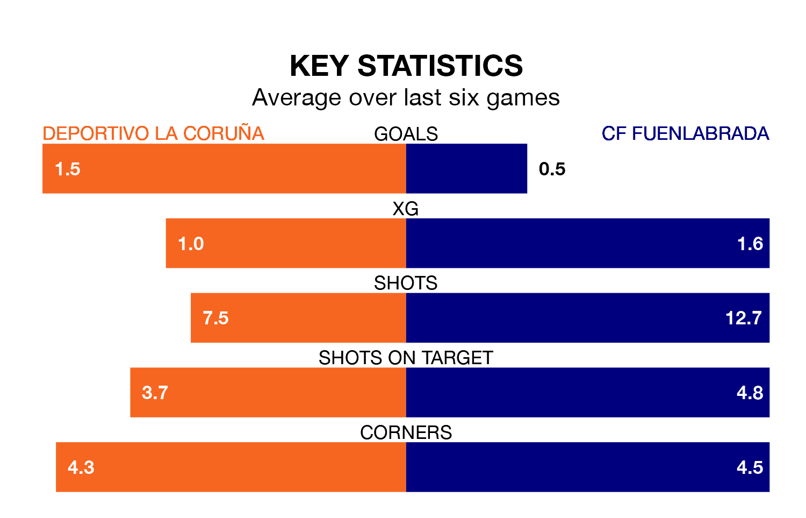

Deportivo La Coruña are heavy favourites to keep all three points at home in Sunday's late kick-off against CF Fuenlabrada.
Deportivo La Coruña, who sit fifth in Primera Division RFEF Group 1 with 21 games played, are priced at 1.5 to seal victory.
Sitting eight places and eight points behind them in the table, Fuenlabrada are 6.0 to win with *Betting Company*, while the draw is at 3.8.
With 19 goals in 21 games so far this season, Fuenlabrada are scoring at below the league average rate with 0.9 goals per game. But they are conceding fewer than average too, letting in 18 goals at a rate of 0.9 per game.
Deportivo La Coruña, meanwhile, are above average scorers, with 1.1 goals per game, compared to a league average of 1.0. They have conceded 0.8 goals per game.
The home side are in good form in Primera Division RFEF Group 1, with four wins and a draw from their last six games.
With no wins and four draws over that period, the visitors' form is much worse – they have taken four points from 18, compared to Deportivo La Coruña's 13.
In the last five years, Deportivo La Coruña and Fuenlabrada have played each other on five occasions. Deportivo La Coruña won three of them, Fuenlabrada one, and they drew once.
On average, Deportivo La Coruña scored 2.2 goals and Fuenlabrada 1.2 in those matches.
Their last meeting was on October 1, when Fuenlabrada won 2-1 at home.
Deportivo La Coruña's last match was on Sunday, a 2-1 win against Celta de Vigo B, with Pablo Vázquez Pérez getting the goals for Deportivo La Coruña.
Fuenlabrada lost 2-1 against Barcelona B last time out, on January 27.
Updated: 14:12 (UTC), 02/02/24